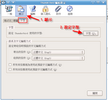
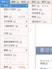
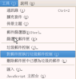

COSA活動記錄簿
留下COSA所辦活動之紀錄
首頁
相簿目錄
::
最新上傳
::
最新留言
::
熱門圖片
::
最高評分
相簿首頁
>
網站發佈相關圖檔
>
AP_Thunderbird
AP_Thunderbird
標題
+
-
檔名
+
-
日期
+
-
位置
+
-
115 次觀看
111 次觀看
112 次觀看

94 次觀看
136 次觀看

103 次觀看
109 次觀看
152 次觀看

104 次觀看
109 次觀看
110 次觀看
97 次觀看
16 張圖片，共 2 頁
1
2